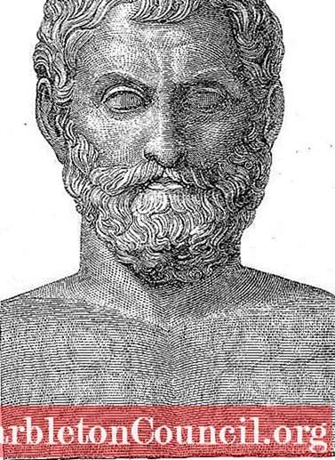

აქ თქვენ შეგიძლიათ შემოიტანოთ სხვადასხვა რიცხვი,
რის შჰემდეგააც დააჭიროთ ქვემოთ მოცემულ მათემატიკურ სიმბოლოებს,
[მიმატება (+) გამოკლება (-) გაყოფა (/) გამრავლება (*) პროცენტულობა (%) აქარისხევა (**)]
რის შემდეგადაც შემოიტანთ მეორე რიცხვს და შჰემდეგ მიცემთ პასუხის ღილაკს (=)
და საიტზე გამოჩდება თქვენს მიერ რიცხვებისგან მიღებული პასუხის
ალბერტ აინშტაინი (1879-1955)
ცნობილია: E = m * c²
ისააკ ნიუტონი (1642-1727)
ცნობილია: ბუნებრივი ფილოსოფიის მათემატიკური პრინციპებით
ლეონარდო პიზანო ბიგოლო (1170-1250)
ცნობილია: ფიბონაჩის თანმიმდევრობით
თალეს მილეტელი (ძვ. წ. 624 - ძვ. წ. 547/546)

ცნობილია: ის არის ფიზიკის მამა და ცნობილია თავისი თეორემით